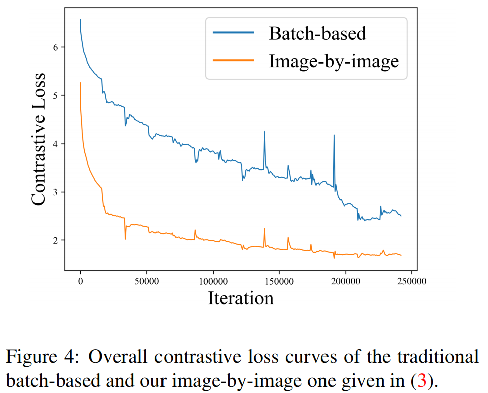

Rethinking Image Forgery Detection via Contrastive Learning and Unsupervised Clustering
Rethinking Image Forgery Detection via Contrastive Learning and
Unsupervised Clustering 

论文（arxiv）
# 摘要
图像伪造检测的目的是检测和定位图像中的伪造区域。大多数现有的伪造检测算法制定了分类问题，以分类像素为伪造或原始。然而，伪造像素和原始像素的定义只在一张图像中是相对的，例如，图像A中的伪造区域实际上是其源图像B中的原始区域（拼接伪造）。这种相对的定义被现有的方法严重忽视了，这些方法不必要地将不同图像中的锻造（原始）区域混合到同一个类别中。为了解决这一难题，我们提出了法医对比聚类（FOCAL）方法，这是一种新的、简单而又非常有效的基于对比学习和无监督聚类的图像伪造检测范式。
具体来说，FOCAL：
1)利用像素级对比学习，利用像素级对比学习以图像-图像的方式监督高级取证特征提取，明确反映上述相对定义；
2)采用动态无监督聚类算法（而不是训练的算法）将学习到的特征聚为伪造/原始类别，进一步抑制训练数据的交叉图像影响；
3)允许通过简单的特征级连接进一步提高检测性能，而不需要再训练。
广泛的实验结果在六个公共测试数据集表明，我们提出的FOCAL明显优于先进的竞争算法：Coverage+24.3%，Columbia+18.6%，FF+++17.5%，MISD+14.2%，CASIA+13.5%，IoU+10.3%。FOCAL的范式可以带来新的见解，并为图像伪造检测任务提供一个新的基准。该代码可以在https://github.com/HighwayWu/FOCAL上找到。
引言
一般来说，现有的基于学习的图像伪造检测方法提出了两类分类问题，将像素分类为伪造或原始。需要指出的是，伪造像素和原始像素的定义只是相对于一幅图像的。
例如，图2 (a)中与两个人相关联的像素是原始的，而图2 (b).中相同的像素是伪造的。不幸的是，这种相对的定义被现有的基于分类的伪造检测方法严重忽视了，这些方法不必要地将不同图像中的伪造（原始）区域混合到同一类别中。事实上，图2中的α1、α2和α3区域并不一定具有相似的法医特征，尽管它们属于相同的原始类别（与β1和β2相似）。因此，当看到同一组像素被标记为伪造和原始的时，分类器可能会被误导，导致训练不稳定和检测性能较差。
重新思考伪造像素和原始像素的相对定义，促使我们重新制定先前流行的分类问题，形成一个具有对比学习和无监督聚类的新范式。具体地说，我们在这项工作中提出了法医对比聚类（FOCAL, FOrensic ContrAstive cLustering）方法，一种新颖、简单而有效的图像伪造检测范例。FOCAL利用像素级对比学习，以逐幅图像的方式监督高级法医特征提取，明确地利用上述相对定义。ground-truth的伪造掩模自然地提供了积极和消极类别的像素级区分，使我们的像素级对比学习。此外，我们的对比学习的另一个独特特征是逐图像监督，这可以有效地避免一批不同图像间特征的相互影响。
此外，FOCAL采用动态无监督聚类算法将学习到的特征聚类为伪造/原始类别，进一步避免了训练数据的交叉图像干扰。请注意，这里所采用的聚类模块不涉及任何可训练的参数，因此不参与训练过程。研究还表明，通过直接的特征级融合，可以进一步提高性能，而不需要再训练。
广泛的实验结果在六个公共测试数据集表明，我们提出的焦点显著优于先进的竞争算法[8,25,28,50,15]大利润率：Coverage+24.3%，Columbia+18.6%，FF+++17.5%，MISD+14.2%，CASIA+13.5%，+NIST10.3%。FOCAL的范式可以带来新的见解，并为图像伪造检测任务提供一个新的基准。我们的主要贡献可以总结如下：
1.
我们从伪造/原始像素的相对定义度的角度，重新思考了基于分类的图像伪造检测范式的固有局限性。
1.
我们设计了一种新颖的、简单而有效的基于对比学习和无监督聚类的范式用于图像伪造检测。
1.
在6个（跨域）数据集上，所提出的焦点算法的性能显著优于几种最先进的图像伪造检测方法，IoU的平均增益为19.6%，F1的平均增益为10.4%。
FOCAL 对比学习
FOCAL 的训练过程如图3 (b)所示：
一旦我们从给定的输入X中提取高级特征F，我们就通过像素级对比学习直接监督F。地面真实伪造掩模Y自然为我们提供了正和消极类别的索引，使有效的像素级对比学习。正如很快就会更清晰的那样，焦点的对比学习以逐图像的方式进行监督，这与现有的对整个正向小批执行监督的算法[19,6,15,54,56]有很大的不同。
具体来说，我们采用了一种改进的InfoNCE损失[16,35]来实现焦点中的对比学习。
我们首先通过执行一个扁平化操作来构造一个字典 $ f() : {}^{ } ^{ }$ \[f(F) \rightarrow \{ q , k^+_1 , k^+_2 , ..., k^+_J , k^-_1 , k^-_2 , ..., k^-_K \}\] 其中， $ { q , k^+_1 , k^+_2 , ..., k^+_J , k^-_1 , k^-_2 , ..., k^-_K } $ 被定义为字典，q是一个编码查询。我们让 $ { q , k^+_1 , k^+_2 , ..., k^+_J } $表示属于原始区域的特征（以Y中的0为索引），而 $ { k^-_1 , k^-_2 , ..., k^-_K } $表示伪造区域的特征（以Y中的1索引）。
在图像伪造检测任务中，伪造或原始区域通常覆盖超过1像素（特征）的区域，这意味着字典中正键J的数量也远远大于1。然后，根据图像伪造任务而定制的改进的信息损失可以计算为 \[{\cal {L}}_{InfoNCE++}=-log \frac { \frac 1 J \sum _{ j \in [1,J] } exp(q \cdot k^+_J / \tau ) } { \sum _{ i \in [1,K] } exp(q \cdot k^+_i / \tau ) }\] 其中， $ $ 是一个温度超参数[51]。注意，在原始的InfoNCE loss [16,35]中，字典中只有一个q匹配的正键。在我们改进的InfoNCE损失(2)中，通过取q与正类$ { k^+_j } $ 点积的期望，在每个损失计算中涉及所有的正键。这将促进优化过程。
需要强调的是，训练阶段的监督是直接在地面真实伪造掩模Y和提取的特征F之间进行的，而没有生成预测的伪造掩模。
此外，对于前向小批量中的每一幅图像， $ {}{InfoNCE++} $ 以逐图像的方式（one-by-one）计算，而不是对整个批量进行计算，然后求和计算总体损失。更具体地说，给定一个小批特征 $ {F_1、F_2、···、F_B} $ ，总体对比损失 $ {}{ct} $ ： \[{\cal {L}}_{ct}=\frac {1} {B} \sum _{b=1} ^{B} ({\cal {L}}_{InfoNCE++}(F_b))\] 请注意，在上述（3）式中，没有合并小批特征来计算整体的 $ {}_{InfoNCE++} $ ，避免了训练数据的交叉图像影响。在伪造/原始像素的相对定义的指导下设计的总损失与[5,15,16,32]中的损失有很大的不同，[5,15,16,32]中的损失计算是在批处理级别进行的。
为了进一步证明(3)的合理性，我们在图4中绘制了传统的基于批处理和我们的逐图像图像的对比损失曲线。

可以清楚地看到，损失函数（橙色线）的逐图像设计不仅使收敛速度更快，而且使优化更加稳定。特别是，在蓝线中检测到的高振幅脉冲表明相关的图像中可能存在严重的冲突，例如，类似于图2 (a)和(b)的情况，其中出现冲突的标签。
最终，训练有素的提取器将被用于FOCAL测试阶段。正如预期的那样，并将通过实验验证，我们的像素级对比学习与逐幅图像的整体损失设计，显著提高了图像伪造检测性能。